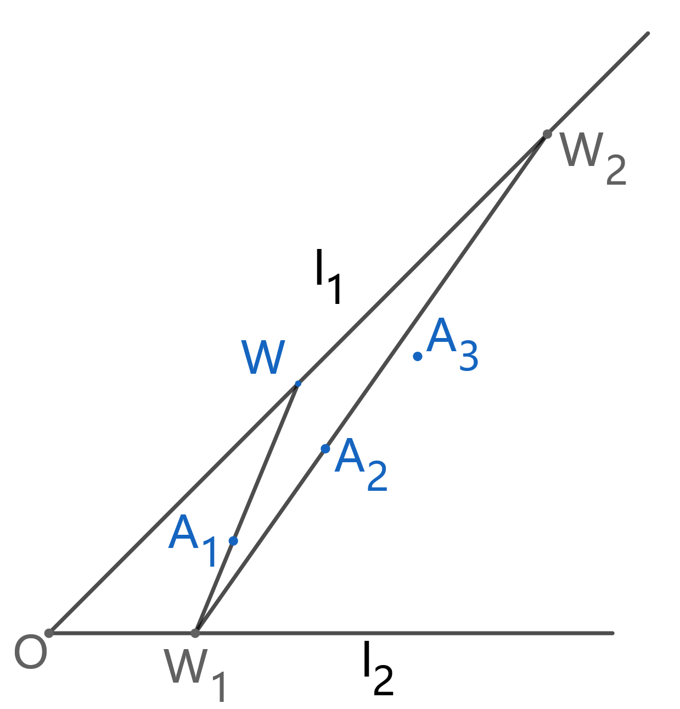
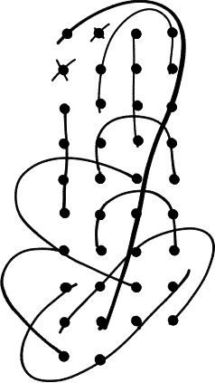

1. (阿贝尔群性质，皮亚诺公理) 1+2=2+1= ( ) 。(Zhao New)
2. 证明: 沂水一中任意42名学生中，必有4人相互认识或相互不认识。(这里规定，若A认识B，那么B也认识A；若A认识B，B认识C，那么A不一定认识C)。(Sife Cleak)
3. 证明:$$4^{n-1}(cos \alpha )^{2n-1}=\sum_{m=1 }^{n} {\textstyle \large{C}_{2n-1}^{n-m}} cos(2m-1)\alpha$$(Sife Cleak)
4. 上一点W，作延长与交于，操作下去直至，取上不同于W的两点P、U，作、。证明：与的交点、与的交点、与的交点三点共线。

(Sife Cleak)
5. 双曲线W:上过点作斜率为、的直线、，分别于W交于另外两点A、B，其中有$$tan\left(\frac{\pi }{2+e^{log_{10}k_1}} \right)+tan\left(\frac{\pi }{2+e^{log_{10}k_2}} \right)=tan\left(\frac{\pi }{2+e^{log_{10}k_1}} \right)tan\left(\frac{\pi }{2+e^{log_{10}k_2}} \right)$$证明: 直线AB过定点。
(Sife Cleak)
6. 2024高考数学加强：寻找可分序列。这里给出一个手算得到的一个解，探究这是否是长度最小的解。
(Sife Cleak)
7.定义为十进制下数字自右至左第位数字(若超过了该数长度就取0)，即(是取余运算)$$f(n,m)=\left [ \frac{n}{10^{m-1}} \right ]\%10 ,m,n\in N^*$$
$$D(h(A))=f(\sum_{j=1}^{\infty }h(A+j-1),j ),A\in N^*$$
$$K(A)=\sideset{}{}{D(D(D(\dots}_{\infty 个D} D(\frac{1}{\sqrt{5}}\left(\left(\frac{1+\sqrt5}{2} \right)^A-\left(\frac{1-\sqrt5}{2} \right)^A\right) ) ))),A\in N^*$$
(注: 的作用是将函数转变为另一个函数，因此右式指的是关于的函数而非直接代入求值)
(I)求
(II)证明:
(Sife Cleak)
 &
&